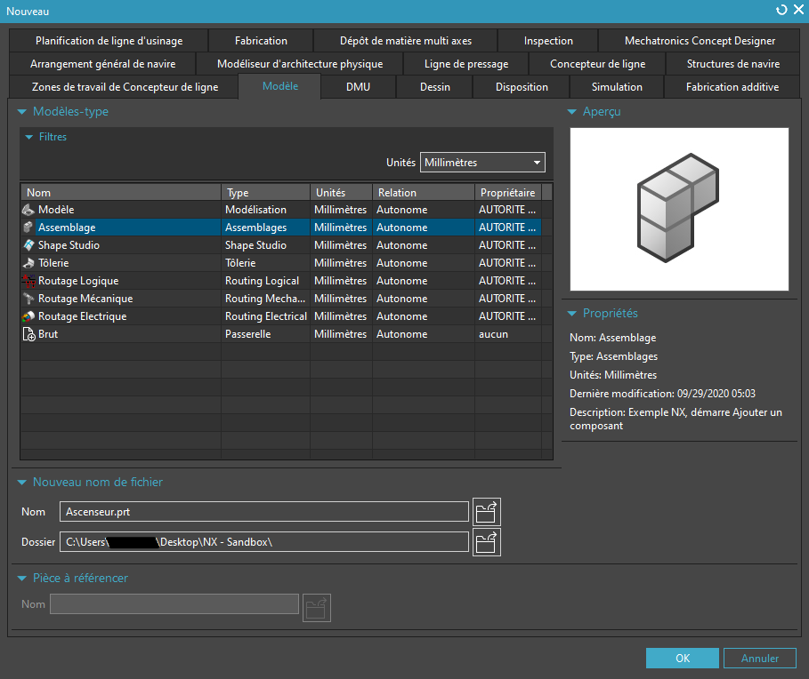
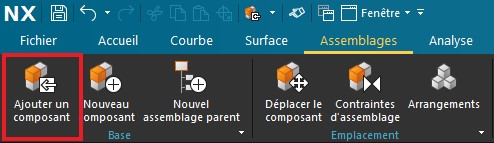
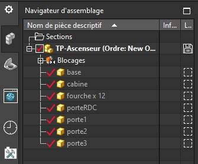
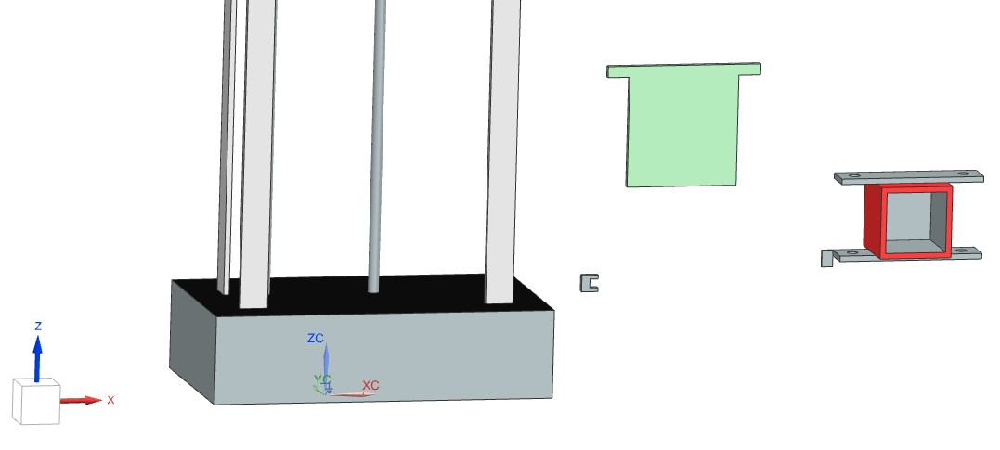
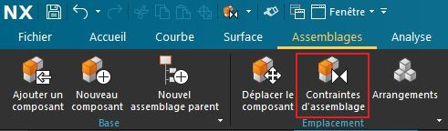
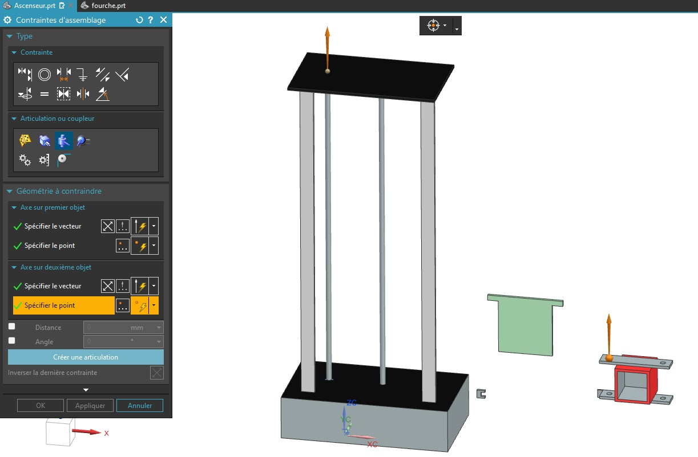
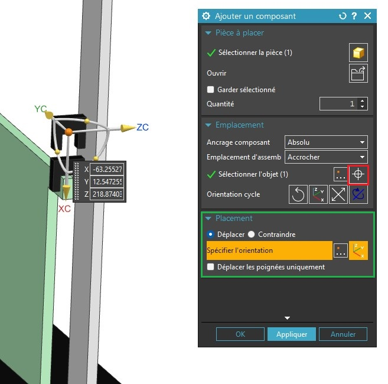
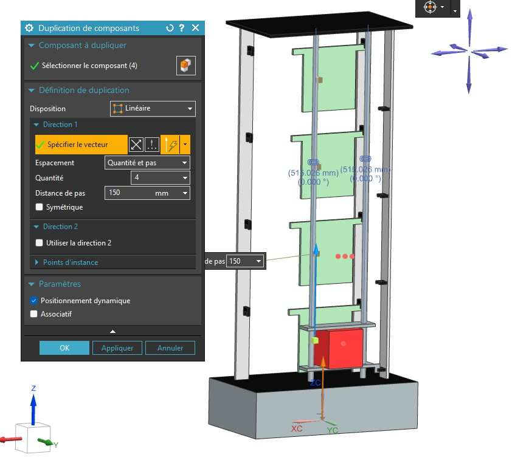
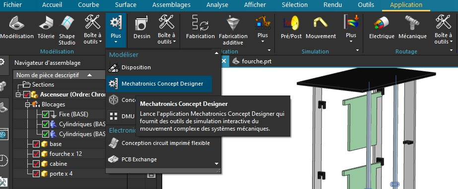

TP 1 : Prise en main NX et modelisation 3D
Objectifs
A partir des plans de cotations de la maquette d’ascenseur, réaliser une maquette virtuelle 3D afin de préparer le jumeau numérique.
- Créer des modèles numériques sous Siemens NX
- Importer un modèle 3D existant
- Créer un assemblage 3D de composants
- Créer une animation 3D
Matériel et logiciel nécessaire
- PC équipé avec
- Siemens NX (+Mechatronics Concept Designer)
Support pédagogique
L’ascenseur. Le prototype d’ascenseur possède une cabine pouvant se déplacer entre 4 étages. Chaque étage est équipé de 3 fourches optiques :
- Porte ouverte
- Porte fermée
- Présence cabine
Par sécurité, chaque fourche optique est doublée d’un capteur de contact TOR. (excepté les capteurs de présence cabine aux étages 1 et 2)
Téléchargement
- Fichier de départ : base.prt
- Plans de cotations : cotations.pdf
Travail à réaliser :
- Lire et comprendre les plans de cotation
- Importer le modèle existant
- Créer un assemblage de composants
- Créer l’animation d’un scénario de fonctionnement.
1. Création d’un nouveau projet
Pour commencer, créez un nouveau dossier sur la session. Renommez le dossier tp1_ascenseur_nom_promo (ex : tp1_ascenseur_JulesTOPART_I5GSPA) puis, lancer Siemens Mecatronics concept designer.
Warning
Si NX ne se lance pas et affiche un message d’erreur lié à un problème de licence, suivez ce tutoriel
Une fois que le logiciel NX est correctement démarré, cliquez sur l’icône Nouveau en haut à gauche de l’interface.
Dans le menu de création de fichier, sélectionnez Assemblage.

Renommez le fichier Ascenseur.prt puis enregistrez le dans votre dossier de travail.
Cliquez ensuite sur OK.
2. Importation d’un composant existant
Pour importez un composant, cliquez sur Ajouter un composant dans l’onglet Assemblage

Selectionnez ensuite le fichier base.prt préalablement placé dans le dossier du projet.
Cette pièce est la partie immobile de l’ascenseur, nous allons donc l’immobiliser dans le menu d’importation.
Pour cela, dans la rubrique, Placement, selectionnez la case Contraindre puis cliquez sur le symbole Fixe. Cliquez ensuite sur l’objet 3D dans l’espace de travail pour spécifier l’objet à figer.
Cliquez ensuite sur OK puis sur Oui pour créer un encastrement.
Maintenant que la base est importée, nous pouvons modéliser les autres pièces du systèmes. Nous devons obtenir l’arbe d’assemblage suivant à la fin de la conception :

3. Nouvelle pièce
Nous allons commencer par modèliser une des douzes fourches optiques de l’ascenseur. Commençons par créer une nouvelle pièce, comme pour l’étape 2, il faut se rendre dans l’onglet Assemblage puis cliquez sur Nouveau Composant
Cette fois nous allons créer un modèle, sélectionnez Modèle et renommez le fichier fourche.prt.
Un fois encore pensez à spécifier le chemin du dossier projet.
Puisque l’objet n’est pas encore modèlisé, cliquez ensuite sur OK sans selectionner d’objet
L’objet est maintenant créé, il apparait alors dans le volet de gauche, dans le navigateur d’assemblage. Faîte un clic droit sur fourche dans l’arbre et selectionnez ouvrir dans la fenêtre. Un nouvel onglet vierge devrait apparaitre.
4. Nouvelle esquisse
Pour modèliser la pièce, commencez par tracer une esquisse, pour cela, il faut se rendre dans l’onglet Accueil et cliquer sur Esquisse
Selectionnez le plan vertical XZ puis validez.
Info
Lors de la création d’une esquisse, NX crée immédiatement un nouveau système de coordonnées ayant l’axe Z pour normal au plan de l’esquisse. Tous les tracés de l’esquisse appartiendront au plan XY du système de l’esquisse.
Nous pouvons maintenant dessiner le profil de la fourche optique. Référez vous au plan de cotation pour dessiner la fourche au bonne dimension.
En utilisant l’outil Profil, dessiner les contour de la fourche comme cela :
Info
Utilisez Esc pour quitter l’outil actif.
Caution
NX ajoute automatiquement des côtes à tout les objets d’une esquisse. Ces cotations sont flexible et aparaisse en gris clair. Vous pourrez donc déplacer les points et les segments à votre guise dans que le profile n’est pas contraint. Notons aussi que tous les objets sont positionnés par rapport à l’origine de l’esquisse. Il est parfois possible et/ou neccessaire de spécifier le point d’origine de l’esquisse lors de sa création.
Pour créer des contraintes géométrique, il est possible de faire un clic droit sur l’objet à contraindre puis de selectionner le type de contrainte approprié. Pour créer la première cotation, faite un clic droit sur le segment en haut du profil puis cliquez sur l’icône de Cote horizontal.

Info
Lorsque NX crée une cote, il y assoscie automatiquement un paramètre. Un paramètre en CAO est une variable modifiable à tout instant permettant de modifier une pièce automatiquement à la fin de la conception. Dans l’idéal, toute modèlisation devrait être paramétrique pour accélérer le cycle de conception.
Une fois la cote créée, il est possible de double-cliquer dessus afin de l’éditer. Dans le menu d’édition de cote linéaire, renomez le paramètre (p0)en width puis entrez la valeur de la cote.
Pour contraindre le segment à gauche du profil, une contrainte d’égalité peut être préférable afin de limiter le nombre de paramètre. Dans la barre d’outil cliquez sur Contraintes Géométriques
Utilisez à nouveau l’outil de contrainte géométrique pour créer une liaison de colinéarité entre les deux segments verticaux de droite.
Pour éditer une cotation temporaire déjà existante vous pouvez simplement double-cliquer dessus pour la transformer en cote linéaire.
Vous pouvez également utiliser des formules à la place d’une valeur dans le menu de cote linéaire. La profondeur de la fourche (Manquante sur le plan) est égale à width/2.

5. Extrusion
L’esquisse terminée, Il faut ensuite l’extruder. Pour cela, cliquez sur le button terminer l’esquisse (Drapeau noir et blanc).

Cliquez ensuite sur extrusion puis selectionnez le profil que de la fourche.


Une fois l’extrusion terminée, enregistrer la pièce dans votre dossier de travail. Répétez désormais tout le processus afin de réaliser les autres pièces de l’ascenseur.
Pièces à réaliser :
- Fourche optique
- Cabine d’ascenseur
- Porte (Sans inscription)
Les trois portes étant similaire, créez une porte sans inscription pour le moment, nous dupliquerons la porte plus tard et ajouteront les inscriptions dans le même temps.
6. Assemblage
Une fois que toute les pièces sont réalisée, vous pourrez passer à l’assemblage de celles ci. Commencez par disposer les portes en utilisant l’outil de positionnement. Nous n’utiliserons les contraintes d’assemblage seulement pour placer plus facilierment les composants. Les contraintes ne serviront pas dans l’animation de l’ascenseur.

Commençons par placer la cabine de l’ascenseur. Pour cela, créez une contrainte de glissement entre les trous cylindrique de la cabine et les rail cylindrique de la base.
Cliquez sur l’icône Contrainte d’assemblage comme ci-dessous :

Puis créez une articulation pivot glissant entre l’axe et la cabine. Répetez avec le deuxième axe.

Déplacez ensuite la cabine vers le bas en utilisant l’outil Déplacer le composant. Lorsque vous êtes satisfait de la position de la cabine, servez vous de cette position pour placer les autres composant.
Placez ensuite la première porte devant la cabine à quelque millimètre derrière les rail plat verticaux.
En se basant sur la position de la portes nous pouvons désormais placer les fourches optiques. Placez la fourche de détection de la porte fermée comme suit.
Nous allons maintenant dupliquer la fourche sur le rail côté porte ouverte. Pour cela cliquez sur Ajouter un composant, dans l’onglet Assemblages.
Selectionnez la fourche optique et accrochez la à la fourche déjà en place grâce à l’îcone en rouge ci dessous. Assurez vous que le placement est configuré sur Déplacer (Zone verte). Déplacez ensuite la fourche jusqu’à sa position sur l’autre rail.

Déplacez ensuite la nouvelle fourche jusqu’a la position de porte ouverte.

Répetez ce processus pour la dernière fourche. Un fois la dernières fourches placée, Utilisez l’outils Duplication de composants pour copier la porte et les trois fourche 150mm plus haut. Nous répéterons cette duplication 4 fois pour obtenir les 4 étages. Pensez à décocher le paramètre Assosciatif

7. Animation
Une fois tout les composant en place Il est possible de créer une animation pour démontrer le fonctionnement de la maquette nuémrique.
Pour cela, rendez vous dans l’onglet Application et choississez Mechatronics concept designer

Rapprocher vous du professeur pour réaliser cette partie.